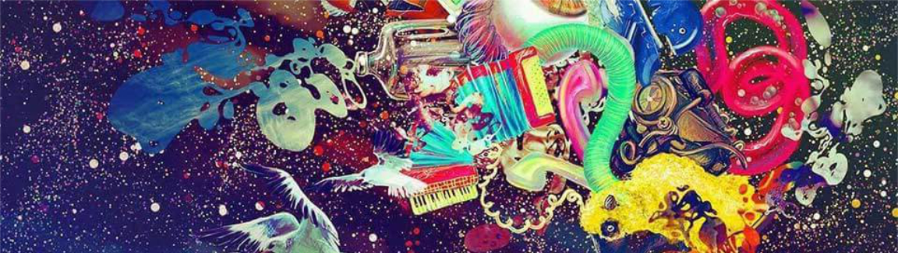

My mom said I could do it... I believed her!
I am a 3D artist and designer, knowledgeable in gamedev, real-time interactive experiences and interactive visualizations for products and architecture. I am also proficient in archviz, industrial design, design-engineering and sketching. I can do some coding as well (Python and C#).
Bachelor in Industrial Design, I graduated in 2006 from the Presbiterian University Mackenzie in São Paulo, Brazil. I am dynamic, sociable, communicative and passionate about art, design and technology. Although my early experience encompasses design, branding and manufacturing, it grew towards 3D art, gamedev and app development. Working with a wide range of partners and teams was also ever present throughout my career.
Now as a freelancer, I can deliver a whole set of services with an army-knife set of skills and tools while I grow myself into a fully capable Indie Dev.